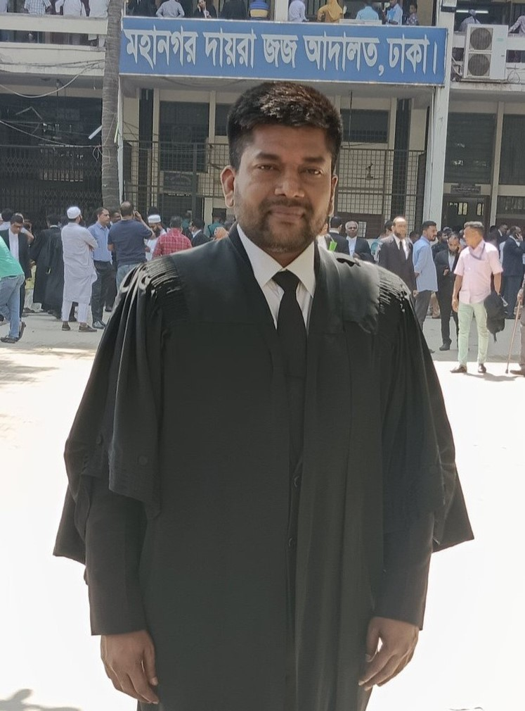
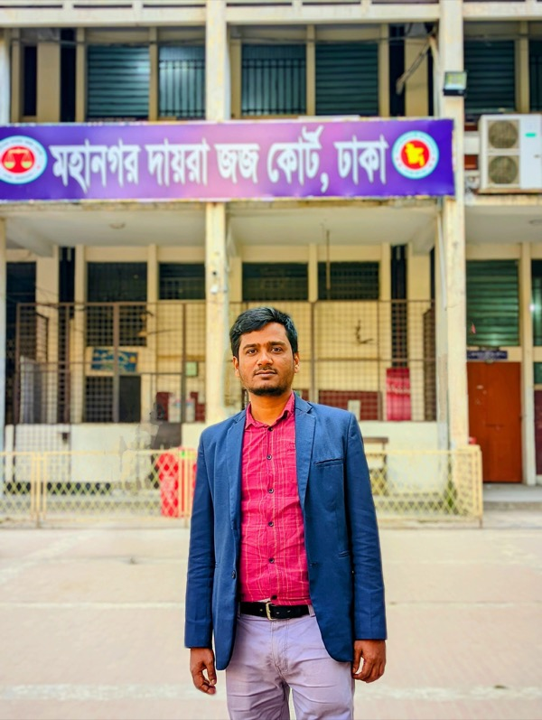
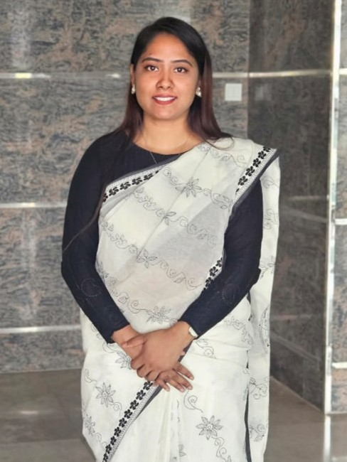

Advocate M Alamgir
Founder
Advocate M. Alamgir is a dedicated and results-driven legal professional in Bangladesh with over 15 years of experience in legal practice. He is the Founder of Fair & Square Legal Associates, a client-focused law firm committed to delivering reliable and effective legal solutions.
He regularly represents clients before various courts, handling a wide range of matters including civil, criminal, family, and business disputes. With a strong foundation in legal practice and a client-oriented approach, he is known for providing practical and strategic solutions to complex legal issues.
His goal is not only to represent clients but also to guide them with clarity and confidence through every stage of the legal process. In addition to his legal practice, he actively promotes legal awareness through digital platforms, making legal knowledge more accessible to the public.


Advocate Md Ripon Khan
Managing Partner
Advocate Md Ripon khan is a committed legal practitioner with over 10 years of experience in the legal field. He provides comprehensive legal support across civil, criminal, and family law matters, offering tailored strategies for each client.
Known for his professionalism, reliability, and solution-oriented approach, he focuses on achieving practical and effective outcomes. He values trust, confidentiality, and strong client relationships. Alongside his practice, he shares legal insights through digital platforms, helping simplify complex legal concepts.
Advocate Rabiya Eaty
Managing Partner
Advocate Rabiya Eaty is a dedicated legal professional with over 10 years of experience in the legal field. She specializes in civil, criminal, and family law matters, providing practical and result-oriented legal solutions.
Known for her integrity, professionalism, and strong advocacy skills, she is committed to protecting clients' rights and ensuring fair justice. She believes in clear communication and client-centered service at every stage of the legal process. She also promotes legal awareness through digital platforms.


Rafiqul Islam
Associate
Rafiqul Islam is the Associate of Fair & Square Legal Associates. With over 10 years legal experience, he specializes in civil, criminal, and land law.
Dedicated to integrity and excellence, he provides strategic counsel and robust representation, ensuring professional and effective legal solutions for every client.
Md. Nadim Mahmud
Associate
Md. Nadim Mahmud is a dedicated legal professional and an Associate at Fair & Square Legal Associates. With over 10 years of experience in the legal field, he specializes in providing strategic counsel and effective representation.
Committed to excellence, he ensures high-quality legal solutions tailored to his clients' needs, maintaining the highest standards of professional conduct and advocacy.


Habiba Sultana Sumi
Associate (Tax and VAT Specialist)
Habiba Sultana Sumi is a dedicated Tax and VAT Specialist and an Associate at Fair & Square Legal Associates. With over 5 years of experience, she provides expert counsel in fiscal law and regulatory compliance.
Her commitment to precision and excellence ensures effective legal solutions for complex financial matters, helping clients navigate the intricacies of taxation and VAT regulations in Bangladesh.